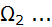
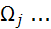
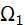

Genel Matematik
1 - Başlangıç Bilgileri
3.1 - Matematik Mantığa Giriş
1.3.1 - Matematik Mantığın Alanı
Matematik Mantık, genel mantığın bir alt alanııdır. Mantık bilinenlerden bilinmeyenleri, doğru olarak bulunması için gerekli yöntemleri inceleyen bir filosofi alanıdır.
Mantık, insanların aklında gelişen bir akıl yürütme yöntemidir. Akıl yürütme, insanların kendisine özgü, dışa karşı kapalı olarak yürütülen bir çalışma olduğundan mantık, gündelik dil ile açıklanan bir akıl yürütme yöntemi olarak tanımlanır.
Mantık, işlevini savları değerlendirerek yürütür. Savları bir önceki konuda incelemiştik. bu konuyu incelerken, eski bilgileri yinelemek yararlı olacaktır.
Savlar “Galatasaray Fenerbahçeyi yener!” şeklinde dayanaksız varsayımlar değildir. Dayanaksız varsayımlar, boş ve inandırıcılığı olmayan iddialardır. Savlar ise, öncülleri, dayanakları ve sonucu olan yapılanmalardır. Örnek olarak,
Cemberin çevresi = 2 * π * r dir.
r = 1 / 4 m dir.
-----
/∴ Çemberin çevresi π / 2 m dir.
veya sıralı gösterimle,
L = 2 * π * r , r = 1 / 4 m =| L = π / 2 m
geçerli bir savdır, çünkü, öncülü, dayanağı ve sonucu bulunmaktadır.
Önermelere de özen göstermek gerekir. Önermeler, savların yapıtaşlarıdır. Önermelerin doğruluklarının saptanması, mantığa ait değildir. Önermelerin doğruluğu, çoğunlukla, önerenler tarafından belirtilir, bazen de gerçek durumla uyum, veya iligili bilim dalının incelemesi ile ortaya çıkartılır.
Mantık sadece, öncüllerden sonucun çıkartılabildiği savlar ile ilgilenir. Tümdengelimsel bir savda, öncüllerin doğru olması sonucun yüzdeyüz doğru olmasını gerektirir. Tümevarımsal (induktif) bir savda ise, öncüllerin doğruluğu sonucun doğruluğunu ancak belirli bir yanılgı payı ile destekleyebilir.
Mantık sadece bir savın iyiliği, kötülüğü, doğruluğu veya yanlışlığını açıklamaya çalışır. Bu bölümde genel olarak mantığın, özel olarak matematik mantığın çalışma yöntemlerini inceleyeceğiz.
1.3.1 - Önermeler Mantığının Matematiksel Tanımı
Mantığın matematik tanımı kümelerin uygulanması ile gerçekleştirilir. Bu konuda yetkin bir tanım, wikipaedia’larda bulunmaktadır.
Matematik mantık, “Önermeler Mantığı”, “Sembolik Mantık”, “Önermeler Cebri”, “Sıfır Düzey Mantık” gibi adlarla da belirtilmektedir.
Matematik mantık, bir formal, yani formüllerle belirtilen bir sistemdir. Bu mantık, yapısal (sentaktik) bir formül kümesi (İyi Oluşmuş Formüller) (Well Formed Formula veya wff), bu ifadelerin özel bir alt kümesi olan “aksiyomlar” alt kümesi, ayrıca mantıksal eşdeğerliği tanımlayan formüllerin bulunduğu özel bir kümeden oluşur.
Mantıksal sistemlerde, kurallar doğruluk değerlerinin sakınımını sağlayacak şekilde amaçlanan “bilgilenme (inference) kuralları” olarak düzenlenir ve aksiyomları da içerecek şekilde, bilgilenme kurallarından yeni formüllerin oluşturulmasına olanak sağlar.
Aksiyomlar, bir boş küme veya sonlu bir kümenin elemanları olabilirler. Formal dilbilgisi, dilin ifadelerini ve iyi oluşmuş formüllerini tanımlar. Sözyazımı (semantik) ise, ifadelerin doğruluk ve değerlendirme yöntemlerini belirler.
Önermeler mantığı, bir topluluk olarak düşünülebilir. Bu topluluk aşağıdaki elemanlardan oluşur. Önermeler mantığı topluluğunun elemanları birer kümedir.
“Atomik Formül” veya “Yer Tutucuları” veya “Önerme Harfleri” veya “Önerme Sabitleri” olarak adlandırılan bir ilkel (primitif) semboller kümesi.
“Mantıksal İşlemciler” veya “ Mantıksal Bağlaçlar” adı verilen işlemci sembolleri.
Önermeler mantığı, hiçbir aksiyom içermez. Önermeler mantığının aksiyomları, önermeler mantığı dilinin, dilbilgisi kurallarıdır. Bu kurallar, bağlaçlarla bağlanmış basit önermelerden oluşan bileşik önermelerin öntanımlı doğruluk değerleridir. Bu kurallar, hem formüllerin iyi oluşturulmalarında, bileşik önermelerin doğruluk değerlerinin saptanmasında uygulanır.
İyi oluşmuş formüller, ya bir atomik formüldür, ya da önermeler mantığının
sözdizimi (sentaks) kurallarına uygun olarak, bağlaçlarla bağlanmış basit önermelerden oluşan bileşik önermelerdir. Bu önermelerin doğruluk değerleri, önermeler mantığının
sözyazımı (semantik) kurallarına göre saptanır.
Önerme harfleri, p , q , r , s , t gibi harflerdir. Bunlar atomik önerme olabildikleri gibi bileşik önerme de olabilirler. Basit olsun, bileşik olsun, her önerme harfinin tek bir doğruluk değeri vardır. Önermeler mantığında bu harflerin doğruluk değerleri, ya 0 (“Yanlış”), ya da 1 (Doğru) olabilir. Üçüncü bir doğruluk olasılığının kabul edilmediğini görmüştük. Her önerme harfinin bir tek mantıksal doğuluk değeri vardır. Önermeler ve bir sonraki bahiste konuda inceleyeceğimiz, önermeler mantığının biraz genişletilmiş hali olan yüklemler mantığında bu değerler {0 , 1} kümesi elemanlarından birisidir ve değerlendirme sonuna kadar sabit bir değerdir. Önermeler mantığında, bileşik bir önermenin doğruluk değeri, mantıksal ifadeyi oluşturan önermelerin doğruluk değerlerine bağlı olarak değişir. Örnek olarak, p ∧ q ( p ve q) ifadesinin doğruluk değeri, p ve q önermelerinin doğruluk değerlerine göre değişir. Burada, “p doğruysa q de doğruysa p ∧ q doğrudur”. Yine, “p yanlışsa, q doğru olsa da , p ∧ q doğrudur” gibi, önermelerin doğruluk değerleri olasılığına göre doğruluk değeri değişen bir bileşik önerme sözkonudur. Bu durumda, mantıksal ifadelerde, her mantıksal sabitinin değerinin değişik olduğu durumlarda, bileşik önermenin değerinin değişmesi ortaya konulmalıdır. İki sabitli bir ifadede sabitlerin , = 4 değişik durumu, (p=0, q =0), (p=0, q =1),(p=1, q =0), (p=1, q =1) incelenmelidir. Bu yüzden, bileşik ifadelerin olası sonuçlarının incelenmesine sabit değerlerin farklı olduğu durumların gözönüne alınması gerektiği için, önerme harflerine, önerme değişkenleri adı da verilmektedir. Bu değerler, ifadenin değerlendirilmesinin sonuna kadar değişmeden kalırlar (Doğruluk Değerlerinin Sakınımı).
Önermeler mantığı, doğruluk değeri bağlaçları altında kapalı bir sistemdir. Yani, eğer p bir fomülse, ¬ P (P değil) de bir formüldür. Sadece bağlaçlarla beğlı veya atomik önermeler formüldür ve başka hiçbir şey formül değildir. Önermeler mantığı sadece önermelerden oluştuğu için “sıfırıncı düzey mantık” olarak nitelendirilir. Yüklemler mantığı, önermelerin analitik, (Gr. Lüsis = ayırma, parçalara bölme) olarak bölünerek tümü (∀) ve bazıları (∃) şeklinde iki yeni nicelendirici (Quantifier) eklendiği ve ikisinin arasında tek bir ilişki bulunabildiği için, “Birinci Düzey Mantık” olarak adlandırılır.
Kurt Gödel' in "Eksiklik Kuramı" ığı altında, sıfır ve birinci düzey mantıklar, Kurt Gödel’in “Eksiklik Kuramı”na göre tam ve tutarlı olmakla birlikte “zayıf mantıklar” olarak nitelendirilir. Matematiğin, yüzde yüze yakını bu mantıklar çerçevesinde açıklanabilmesine karşın, matematiğin tümü bu zayıf mantıklar çerçevesinde açıklananamaz. Kurt Gödel’in “Eksiklik Kuramı”na göre, yeterince güçlü, bir mantık dilinde yapılacak tanımların tümü bu dil içinde kanıtlanamaz. Bazı ifadeler “karar verilemez” olarak kalır ve kanıtlanabilmeleri için bir üst dilin kullanılması gerekir. Bu şekilde, matematiğin tamamı, Hilbert’in idealinde olduğu gibi, formalist bir görüşle açıklanamaz. Yine de matematiğin tümüne yakın kısmı, “Matematik Mantık” olarak adlandırılan, sıfır ve birinici düzey mantıklarla açıklanabilir. “Eksiklik Kuramı” sadece kuramsal planda açıklanmasına olanak olmayan “evet veya hayır” olarak belirlenemeyen (“karar verilemez”) çok küçük kısımları ilgilendirir. Matematik mantık ile açıklanabilen ve uygulanan matematik, fiziksel yaşamda uygulanan tüm matematiği başarı ile açıklar. Bu yüzden matematik yaşadığımız çağın en başarılı teknolojik gelişmesi olarak nitelendirilmektedir. Bu çalışmada, sıfır ve birinci düzey matematik mantığa dayalı uygulamalı matematik üzerinde durulacaktır.
Bir örnek ile başlamak yararlı olacaktır. Bir ülkede bir deprem yöntmeliği olsun. Bu deprem yönetmeliği tüm yapısal tanımlar için ana şablon anlamına gelir. Ülkede ne türlü bir yapı yapılırsa yapılsın, yapım şablonu, deprem yönetmelği şablonununa dayanmalıdır. Bir inşaat şirketinin, çeşitli bina yapım yönetmelikleri olsun bunlara A , B , C gibi tanıtım harfleri verilsin. Herbir şablonun temeli, deprem yönetmeliği şablonudur. A tipinin iki zemin bahçe katı, her katta iki daire olmak üzere altı kattan oluştuğunu varsayalım. Buraya kadar herşey sanal ve elle tutulacak fiziksel bir yapı yoktur. Fiziksel yapı, A tipine uygun olarak, Aydınlık Köy de bir bina, Karanlık Köyde bir başka bina, istendiğinde sonsuz sayıda bina yapılınca ortya çıkar. Bu yapılar, sanal (kağıt üstünde) A tipinin örnekleridir. Bir sanal tip, ancak örnekleri yapılırsa, elle tutulur hale gelir. A tipinin örnekleri daima temelde birbirinin aynıdır. Çünkü, herbiri aynı A tipi şablona uygun üretilmştir ve A tipi şablon, deprem yönetmeliği şablonuna uygun olarak yapıldığından, A tipi şablonun tüm örnekleri, deprem yönetmeliği şablonuna uygundur.
Belirli bir tipin örnekleri (bunlar Java sınıf örnekleri de olabilir), temelde yapısal olarak birbirlerinin aynıdır. Çünkü, hepsi aynı şablonda bağlı olarak üretilmişlerdir, ama görüntüleri farklı olabilir. Aydınlık Köydeki örnekte dış cephe tuğla üzerine izolasyon sıvası, Karanlık Köyde yapılanın cephesi kalın cam kaplı olabilir. Yani her sınıf örneği, birbirinden farklı görüntüde olabilir. Yine de, aynı sınıfın örneklerinin farklı görüntülerde olmaları bunların aynı sınıfın örnekleri olmaları gerçeğini değiştirmez. Yani, görüntü farklı, ama ana yapı aynıdır.
Mantıksal sistemlerin yapıları da aynı şekilde düzenlenir. Önermeler mantığı sistemi, bir dildir ve aşağıda görüldüğü gibi belirtilebilir.
L = L(A , Ω , Ζ , Ι)
Burada L (), Python programlama dilinde gördüğümüz br topluluk (tuple) dür. Bu topluluğun tanımından sonra hiçbir elemanı çıkarılamaz ve yenisi eklenemez.
Alfa kümesi (A), önerme sembolleri veya değişkenleri olarak adlandırılan p , q , r, s, t.. gibi bir ifadeye yeterli olacak sonlu sayıda elemanı olan bir kümedir.
Omega kümesi (Ω), birbirlerinden ayrık, ∪ ∪ ∪  ∪
alt kümelerinden oluşur, bunlar önermelerin alacağı değerler ve dilde uygulanacak işlemcileri eleman olarak alan kümelerdir.
Genel olarak, önermelerin alabilecekleri doğruluk değerleri,  kümesinin elemanları olarak belirlenir:
kümesinin elemanları olarak belirlenir:
 = {0 , 1} (“Hayır” veya “Evet”, üçüncü olasılık gözardı edilir)(“Tertium Non Datur”)
= {0 , 1} (“Hayır” veya “Evet”, üçüncü olasılık gözardı edilir)(“Tertium Non Datur”)
İşlemcilerinin mantıksal işlemciler olması ve doğruluk değerlerinin iki değer (0 ve 1) ile sınırlı olması, mantık sistemlerinin iki veya çok değerli mantıklar olarak tanımlanmasına yol açar. Bu çalışma çerçevesinde, çok spesifik olmayan tüm matematik ve matematik mantık kitaplarında olduğu gibi, iki değerli mantık üzerinde durulacaktır.
 kümesi, olumsuzluk (değilleme) sembolünü içerir.
 kümesi, diğer tüm tanımlı işlemcileri eleman olarak alır:
kümesi, diğer tüm tanımlı işlemcileri eleman olarak alır:
⊆ {∧ (ve) , ∨ (veya) , → (Eğer... ise) , ↔ (eşdeğerdir)}
Zeta kümesi (Z), örneklerde uygulanması “Bilgilenme” (Inference) kuralları olarak hareket eden, formüllerin dönüşüm kurallarıdır.
Iota kümesi (I), eleman olarak aksiyomları alan bir kümedir.
Mantık dili L bir iyi oluşmuş formül (wff) kümesidir. Burada,
Temel : Alfa kümesinin her elemanı (p , q , r , s , t ...) bir formüldür.
Eğer  ,
,  , , birer formülse ve eğer f, kümesinin bir elemanı ise (yani işlemcisi bu dilde tanımlı bir işlemci ise) f( ,
, , birer formülse ve eğer f, kümesinin bir elemanı ise (yani işlemcisi bu dilde tanımlı bir işlemci ise) f( ,  ,
, ,
, ) de bir formüldür. (En basit örnek olarak, eğer p bir formülse ¬p de bir formüldür).
) de bir formüldür. (En basit örnek olarak, eğer p bir formülse ¬p de bir formüldür).
Kapalı Sistem: Başka hiçbir şey formül değildir.
Bu genel tanım, mantık sistemleri için generik bir tanımdır. Bunun anlamı, bu şablon esas alınarak, çalışılacak mantık sisteminin şablonunu belirlenebileceğidir.
1.3.2 - Doğal Tümdengelimin Matematiksel Tanımı
Doğal tümdengelim (natural deduction), Önermeler mantığının uygulama alanıdır. Doğal tümdengelimin mantık yapısı aşağıda görüldüğü gibi, önermeler mantığı ile aynıdır.
= L(A , Ω , Ζ , Ι)
A ve Ω kümeleri aynıdır. Z kümesi ise, doğal tümdengelimi desteklemek için, on bilgilenme kuralına dayanır. Bunlardan ilk dokuzu, bilinen formüllerden (wff) bilinmeyenlerin çıkarımı için düzenlenmiştir. Onuncusu sanal bir düzenlemedir ve deneme ile yeni kurak oluşturulup oluşturulamadığının belirlenmesi amacı ile uygulanır. Bu kuralları kısa süre sonra inceleyeceğiz.
Sonuç çıkarımı için, daha önce de kullandığımız, çizgisel bilgilenme |- (demek ki) sembolünü inceleyeceğiz. Bu sembol Γ |- ψ (Gamma demek ki psi) şeklinde okunur. Γ bazen bir boş küme Ø, bazen tek bir önermeden oluşan bir küme, bazen de birkaç önermeden oluşup dönüşüm kuralları ile tek bir elemana indirgenebilien bir kümedir. Γ kümesi bir boş küme olduğunda, kullanılmaz ve |- ψ şeklinde kullanılır.
Iota kümesi, tüm önermeler mantığı uygulamalarında boş kümeye eşittir (I=Ø). Yani, önermeler mantığında, hiç aksiyom yoktur.
Tüm bu çalışmaları yaparak, önermeler mantığının çalışma yöntemlerini, dönüşüm kurallarını, matematik kanıtlarda kullanılmasını incelemeye başlıyoruz.
Matematik sembolik düzeyde gerçeklştirilen bir akıl yürütme yöntemidir. Ancak örneklerle fiziksel ortama çıkar. Mantematik mantık da aynen bu şekilde sembolik olarak uygulanır ve formülleri çıkarılır. Ancak uygulama örnekleri (Java sınıf örnekleri gibi) fomüllerden fiziksel yapılanmalar ortaya çıkar. Örnek olarak, matematik mantık için iki önermenin birleşimi, p Λ q olarak tanımlanır. Bu tek formülden Ahmet Λ Mehmet, Hasan Λ Hüseyin gibi sayısız örnek oluşturulabilir.
İlk olarak işlemcilerin anlamları ve işlemciler (Bağlaçlar) ile birbirine bağlanmış bileşik önermelerin doğruluk değerlerinin (“Doğru” veya “Yanlış”) olarak belirlenmelerinin yöntemlerini inceleyeceğiz.
Bir önermenin doğruluk değerlerinin belirlenmesi için, çoğunlukla bilgisayar programları kullanacağımızdan, (0) (“Yanlış”) için (F) sembolünü , (1) (“Doğru”) için (T) sembolünü kullanacağız. T sembolü (“True”), F sembolü (“False”) sözcüklerinin ilk harfleridir.
1.3.3 - Ve (And) Bağlacı (∧)
Basit önermeler, ve gibi bağlaçlarla bağlanarak bileşik önermeler haline getirilebilirler. Bağlaçlar çift işlenenli (operand) işlemcilerdir (operator). Burada inceleyeceğimiz “ve” bağlacı en basit önerme bağlacıdır ve matematik olarak “∧” veya “&” olarak belirtilir. genel olarak ters v (∧) şekli kullanılır.
Ve bağlacı ile bağlanan ve bu şekilde tek bir bileşik önerme haline gelmiş olan önermelerin, doğrulanabilmesi için her iki nasit önermenin de ayrı ayrı doğru olmaları gerekir.
Örnek : p önerisi (sıcaklık 15 derece Celsius) , q önerisi (alarm çalıyor) olsun, p ∧ q ne zaman doğrulanır ?
Çözüm : Her öneride sadece “T” ve “F” olmak üzere iki doğruluk olasılığı ve bileşik önerme iki önermeden olşuğuna göre, bileşik önermenin doğruluğunu belirleme için = = 4 tane olasığın incelenmesi gerekmektedir. Bu konudaki doğruluk tablosu, Tablo : 2.2.5 -1 : p ∧ q Doğruluk Tablosu olarak verilmiştir. Bu tablonun incelenmesinde, “Ve” bağlacı ile bağlanmış basit önermelerden oluşan bileşik önerme, ancak tüm basit önermeler doğru ise doğrudur. Diğer tüm durumlarda yanlıştır.
Matematikte, “Ve” bağıntısı çoğu zaman kısaltılmış haliye belirtilir. Örnek olarak,
(x≤π) ∧ (x≥-3) yerine -3 ≤ x ≤ π yazılabilir. Burada x ‘in bir alt değer (-3) ve bir üst değer (π) arasında değerler alabileceği, alt ve üst değerlerin de, x’in alabileceği değerlere dahil olduğu belirtilmektedir. Bir başka örnek, (x<8) ∧ (x> -6) yerine -6 < x < 16 yazılabiir. Burda x’in -6 ile 8 arası değerler alabileceği ve uç değerlerin bu değerlere dahil olmadığı belirtilmektedir.